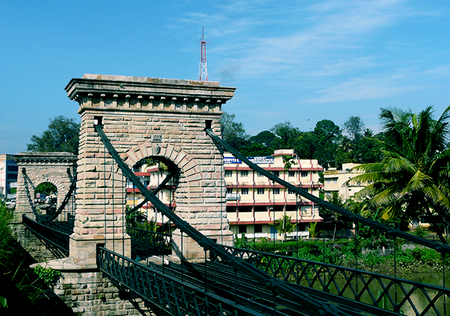
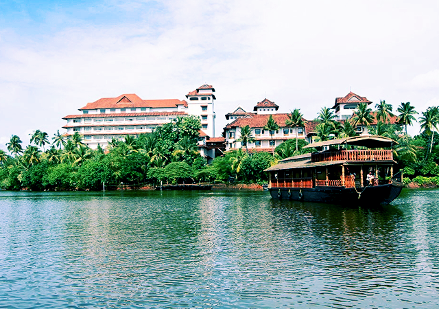
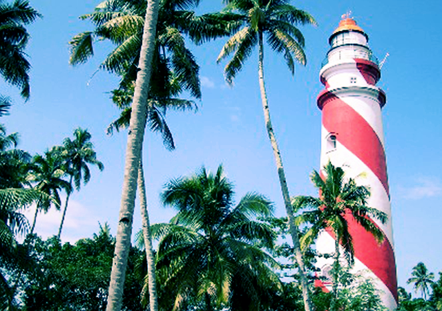
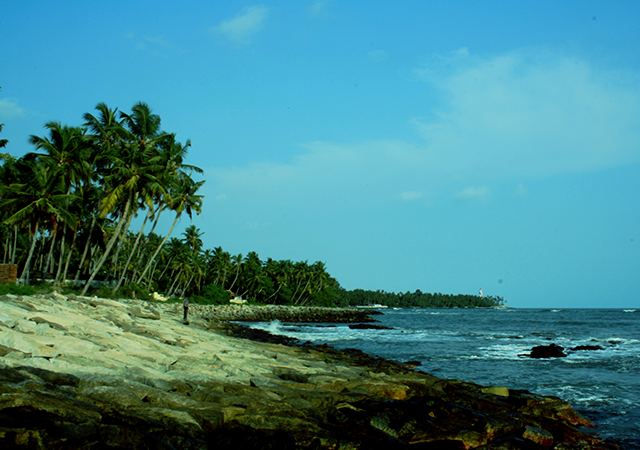
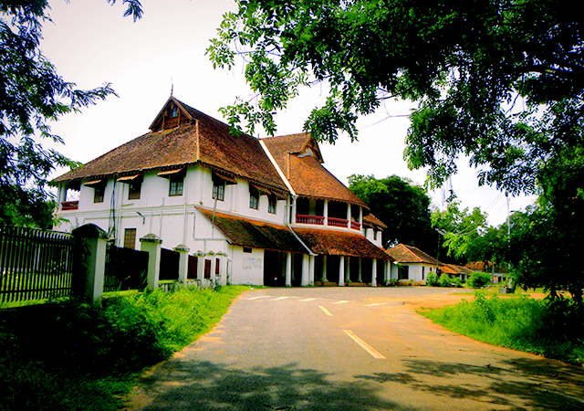

An ancient port city, skirting the stunning backwaters of Kerala, Kollam is ensconced in the southern fringes of the state. A unique blend of serenity and natural splendour, Kollam is dotted with scenic waterfalls, tranquil lakes and pristine beaches that make for a splendid retreat. It is dotted with bustling markets that teem with farmers selling cashewnuts and spices. At its heart is the picturesque Ashtamudi Lake lined with cashew plantations, palm trees and quaint villages.
1.Punalur
Punalur is a town near the Kerala-Tamilnadu Border. The Kallada River flows through this town, giving it the name ‘Punalur’ which means ‘place of water’ in the local lingo.Popularly known as the gateway of the Western Ghats, Punalur is the second largest town in Kollam. A must visit place in Punalur is the suspension bridge which was South India’s first motorable bridge and one of the oldest bridges in Indian history.

2.Ashtamudi Lake
Ashtamudi lake is the most popular tourist spots in Kollam. The serene lake has tourists visiting it at all times of the year. Coconut groves and palm trees can be seen on the banks of the lake swaying gently in the breeze. Known as the gateway to Kerala backwaters, the lake offers boating services in a variety of crafts.The 8-hour houseboat journey to Alleppey winding through canals, and water bound villages is the most popular of the cruises. This journey will expose travellers to a complete backwater experience. The President’s Trophy boat race is held in this lake on November 1st annually.

3.Tengasseri Lighthouse
The Tengasseri Lighthouse is a cylindrical shaped tower offering scenic view of the Arabian sea and Kollam itself. The Tengasseri lighthouse is the second largest in the state, and is a major attraction among tourists visiting Kollam.Built in 1902, the lighthouse rises majestically above the coconut palms. One can witness the glorious sunset from this tower. It is also a perfect place to have some quiet moments and indulge in your own thoughts.

4.Thirumullavaram Beach
Thirumullavaram is a secluded beach in Kollam district skirted by swaying coconut palms and exuding a natural beauty that is bound to soothe your minds.It is one of the most popular beaches in Kerala, safe even for little kids. Visitors can see the ‘Njayarazhcha Para’ (Sunday Rock) about a kilometre and half into the sea.

5.British Residency
lso known as the Government guest house, this two storey building was built by Col. John Munro. The mansion is constructed with a blend of Indian, European and Tuscan architecture styles. The structure is famous for its murals and other artistic embellishments.The notable landmark of this place is the Chinnakada clock tower which stands in the heart of the city. The Edward Rose Garden is another not to be missed attraction of this mansion.
